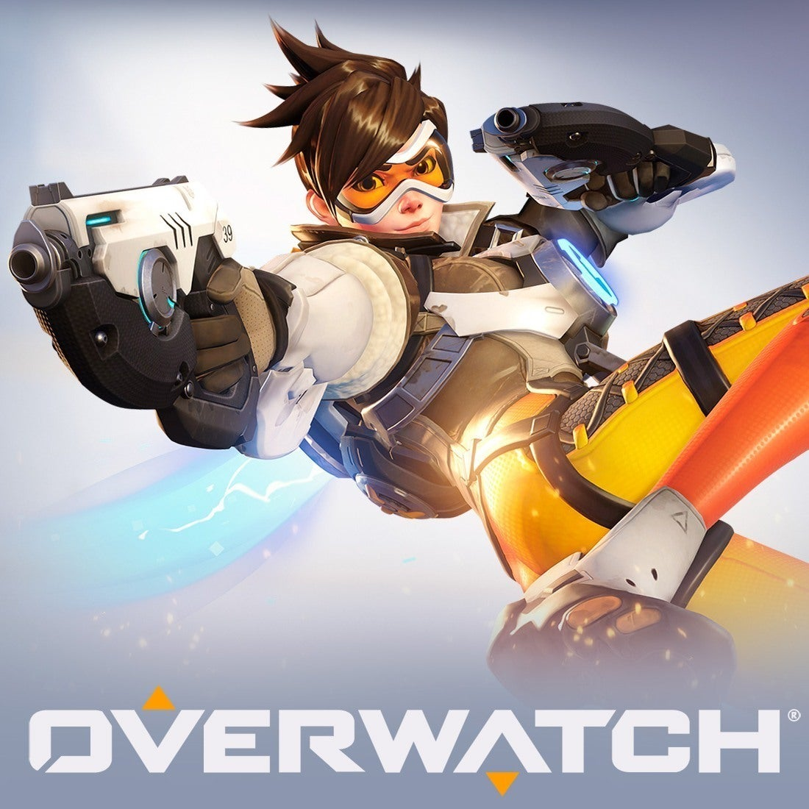

Sunt Bogdan!
O scurta prezentare despre mine.

Numele meu este Norocel Bogdan si am 24 de ani.Sunt stabilit in Vatra Dornei,Suceava. Lucrez intr-o institutie militarizata de ordine publica. Imi place programarea si vreau sa devin cat mai bun in acest domeniu.
|  |
Îmi place să-mi petrec timpul în diverse moduri captivante. Starcraft2 este principalul joc pe care îl învăț cu fiecare joc și încerc să devin cel mai bun.

Schiatul este o modalitate excelentă de a te recrea și de a te duce într-o stare fizică și mentală foarte bună. Funcționează pentru mine tot timpul.

Momentan lucrez in cadrul Ministerului Afacerilor Interne de 3 ani de zile.Din toate armele acestui Minister eu am ales arma Jandarm.Este o meserie care presupune rabdare si sacrificiu din parte fiecarui militar.
 GitHub
GitHub